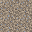
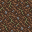
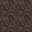
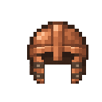
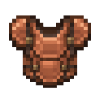
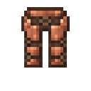
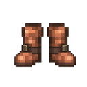
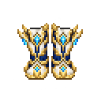
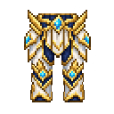
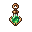

资源预览，非游戏截图。基础方块降低纹理噪声；青铜甲朴素实用，玄天甲金白护片、青色宝石。玄天甲使用原版动态闪光及穿戴宝石呼吸光；没有改装备数值。
四种可交互方块：化髓槽、凝灵器、玉髓修补炉、养元龛。右键加工，潜行右键查看说明，材料放背包。四种均有合成配方、掉落和中英词条。










本轮不改建筑，不写入任何存档。你建筑里的箱子留待建完后设置奖励。参考：暮色森林、Biomancy；只研究风格与交互，不复制它们的素材或代码。